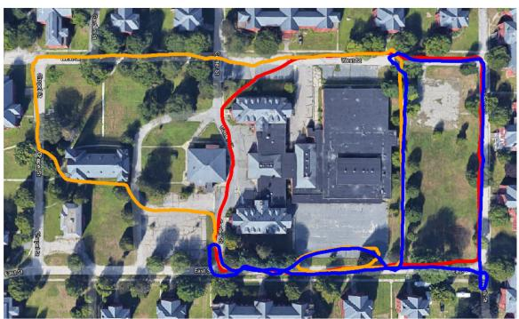
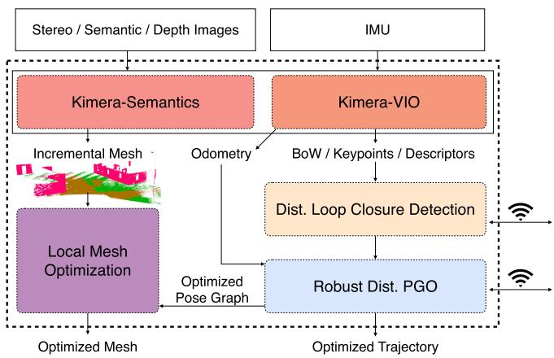
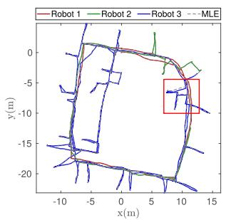
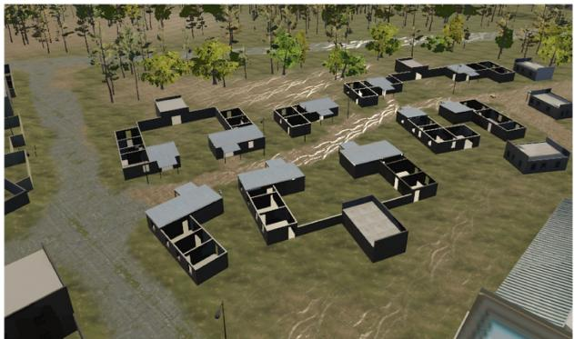

阶段 H · 专题支线（动态 / 语义 / 多机 / 事件）/ Lesson 0171
Kimera-Multi：分布式也能出语义网格
分布式还不算难，难的是分布式还出「度量 + 语义」网格。🧊 这一节看 MIT 怎么把语义网格也做分布了。
🎯 主题：完全分布式度量-语义多机 SLAM 与 D-GNC
👥 作者：Tian、Chang、Carlone 等（MIT，2022）
📅 年份 · Kimera-Multi: Robust, Distributed, Dense Metric-Semantic SLAM
本节目标 读完你应该能：说清 Kimera-Multi 为什么是「完全分布式 + 度量语义」；用自己的话解释 D-GNC（GNC 初始化 + RBCD 分布式求解）；看懂 GNC 权重曲线怎么把 outlier 权重降到 0；理解它相比 PCM 为什么保 recall。
和前面课程怎么接 ★ 它复用了0163 Kimera 的 DSG（场景图五层） 这套表示体系——Kimera-Multi 把前者的「度量-语义网格」做成分布式的。★ 但诚实标注 ：Kimera 主论文（即 0163 那篇）并未提及 Kimera-Multi ，所以只能说「两者同属 MIT-SPARK 团队、同一 DSG 表示体系的延续」——这是推断，不是原文结论。★ 鲁棒后端仍是位姿图上的事，回链第二季 0018 / 0019 ；假回环回链0140 铁律 。★ 它把 0169 的 GNC 推进成「分布式版」。
1. 先说人话：分布式 + 语义网格，难在哪
前面 0169 / 0170 解决的是「多机怎么把轨迹对齐」。Kimera-Multi 在此基础上多要一样东西：不只对齐轨迹，还要合出一张带语义的 3D 网格 （哪面是墙、哪块是桌子、哪个人站在哪间房里）。难点在于——网格是「稠密」的，比轨迹重得多，还要在没有服务器 的前提下，让每台机器人本地的语义网格最终拼成一张一致的全局网格。
Kimera-Multi（MIT，Tian、Chang、Carlone 等，ICRA 2021 会议 + 2022 期刊扩展）的答案是：每台机器人本地跑 Kimera 出语义网格，机器人之间只交换回环 + 位姿 ，后端用 D-GNC （分布式 GNC）做鲁棒 PGO，最后用 LMO（网格变形图） 把各自网格校正到一致。它比中心化精度相当、通信降 70%。
★ 关于血脉的诚实说明（重要，遵守规范 §八①） ：Kimera 主论文（0163 那篇）原文并没有提到 Kimera-Multi 。所以本节不声称「Kimera 是 Kimera-Multi 的前身」，只客观说：两者同属 MIT-SPARK 团队、共用 DSG 这套场景图表示体系 ，Kimera-Multi 可看作「同一表示体系下、把单机的 Kimera 改成分布式版本」的延续——这是基于团队与表示的推断 ，不是原文写死的结论。

原图注（Fig. 1）： Demonstration of Kimera-Multi in a three-robot collaborative SLAM dataset at Medfield… (a) Kimera-VIO drift; (b) Kimera-Multi accurate estimation; (c) also produces a 3-D metric-semantic mesh.怎么看这张图： (a) 单机 VIO 漂得乱七八糟；(b) Kimera-Multi 三机协作后轨迹对齐；(c) 它还直接产出带语义的 3D 网格。这就是「分布式 + 语义网格」的招牌结果。

原图注（Fig. 2）： Kimera-Multi: system architecture. Each robot runs Kimera to estimate local trajectory and mesh. Robots communicate to perform distributed loop closure detection and robust distributed PGO.怎么看这张图： 每台机器人本地跑完整 Kimera（含 Kimera-VIO 与 Kimera-Semantics）出轨迹 + 网格；机器人之间只通信做「分布式回环检测 + 鲁棒分布式 PGO」，没有中心节点。注意它复用的是 0163 那套 Kimera 模块与 DSG 表示。
2. D-GNC：把 GNC 做成分布式的两阶段
Kimera-Multi 的后端叫 D-GNC ，分两阶段：
① 鲁棒初始化（GNC 初始化参考帧） ：对每对机器人用 GNC（TLS 代价）解它们之间的参考帧变换，错的回环在这一步就被权重降到 0；② RBCD 分布式求解（Riemannian Block-Coordinate Descent） ：把 PGO 拆成各机器人本地的子问题，rank 松弛 = 5，每个变量更新默认 15 次迭代，轮流优化直到收敛。
它相对 DOOR-SLAM 的 PCM 最大优势是保 recall ：PCM 求最大团会误杀真回环（低 recall），GNC 让错的边自己退出、真的边留着。原文 Fig.8 在 70% outlier 下，GNC 的 ATE ≈ 0.003 m，而 PCM 是 2.24 m。

原图注（Fig. 8）： Comparing final trajectory estimates under 70% outlier loop closures. (a) PCM (ATE = 2.24 m). (b) GNC (naïve init) (ATE = 11.59 m). (c) PCM + GNC (ATE = 0.09 m). (d) GNC (ATE = 0.003 m).怎么看这张图： 70% 的回环都是假的，极度恶劣。PCM（a）还歪着；GNC 配好初始化（d）几乎完美（ATE 0.003 m）。这直观证明「GNC 保真」远强于「PCM 漏真」——本块「PCM 漏真、GNC 保真」转折的旗舰证据。
3. D-GNC 的权重更新：残差越大，权重越趋 0
D-GNC 给每条边算一个权重 wᵢ，由残差 r̂ᵢ 决定。下面用「控制参数 μ = 10、残差尺度 c̄ = 1」这个示例参数 把精确的分段函数画出来（函数形式取自 Kimera-Multi 的 D-GNC 权重更新）：
这句话在说什么： ① 这个式子在算「每条机间回环该被相信多少」；② 为什么这样就能判对——残差小的回环（和里程计闭得上）给满权重，残差大的（假回环）权重直接归零，优化时它再也拽不动解；③ 权重 / 核函数什么时候把观测当回事：r̂ᵢ² 在 [0, μ/(μ+1)·c̄²]（本例 ≈ 0.909）内全信，超过 (μ+1)/μ·c̄²（本例 = 1.1）直接不信，中间线性过渡。μ 越小越「狠」（更早把可疑边归零）。
D-GNC 权重曲线（示例 μ=10, c̄=1）：残差越大权重越趋 0
w=1
w=0
残差 r̂ᵢ →
权重 w
r²=0.909
r²=1.1
全信（绿区）
不信（红区，outlier）
要记住：权重曲线一旦落到红区，这条回环就被「静音」→ 假回环自己退出
这张图在画什么： 横轴是归一化残差 r̂ᵢ，纵轴是权重 wᵢ；绿区（小残差）权重恒为 1，红区（大残差）权重恒为 0，中间黄色过渡段线性下降。曲线用示例参数 μ=10、c̄=1 由公式精确算出。怎么看这张图： ① 看绿区：残差小（和里程计闭得上）的回环被完全信任；② 看红区：残差超过阈值的假回环权重直接归零，优化时它不再拖累；③ 过渡段的斜率由 μ 控制，μ 越小越「早下手」。要记住的一句话： 这条权重曲线就是 GNC「让错的边自己退出」的数学实现——也是它比 PCM 保 recall 的原因。
4. 分布式鲁棒初始化：GNC 怎么拒掉错误的参考帧
分布式鲁棒初始化：inlier 回环给一致参考帧，outlier 被 GNC 拒掉
A
B
D
inlier 回环 —→ 一致帧
inlier 回环 —→ 一致帧
outlier 回环（错帧）
✕
outlier 回环（错帧）
✕
要记住：GNC 初始化阶段就把「错帧」的 outlier 回环权重归零，只留 inlier 算参考帧
这张图在画什么： 三台机器人 A / B / D 各有本地参考帧；绿色实线是 inlier 回环，给出一致的帧对齐；红色虚线是 outlier 回环，给出错误帧，被 GNC 打上红叉（权重归零）。怎么看这张图： ① 绿色实线：真回环让两台机器人的参考帧「对得上」；② 红色虚线：假回环会算出错误帧，GNC 在初始化阶段就识别并静音它；③ 只有 inlier 参与最终参考帧求解。要记住的一句话： 「先鲁棒初始化、再分布式求解」是 D-GNC 相对 PCM 的关键改进——初始化干净，后面 RBCD 才收敛得快。
5. 度量-语义网格合并：LMO 把各机网格校正到一致
轨迹对齐后，Kimera-Multi 还有一步：用 LMO（网格变形图） 把每台机器人本地的语义网格，按优化好的位姿「拉」到同一张全局网格上。变形图的节点是网格顶点（violet）与关键帧（red），边连接相邻网格顶点、以及网格顶点与它被观测到的关键帧。
度量-语义网格合并：各机本地网格 → LMO 变形 → 一致全局网格
机器人 A 本地网格
机器人 B 本地网格
机器人 D 本地网格
一致全局语义网格（LMO 校正后）
要记住：分布式不只对齐轨迹，还把「稠密语义网格」也拼成一张
这张图在画什么： 上面三块是 A / B / D 各自本地的语义网格（线框），下面一块是经 LMO 变形校正后的「一致全局语义网格」。怎么看这张图： ① 三块本地网格原本各自在小坐标系里；② 黄色箭头表示「用优化好的位姿把网格顶点搬过去」；③ LMO 变形图保证相邻网格顶点被一起拉动，接缝平滑。要记住的一句话： Kimera-Multi 的独特性 = 分布式 + 还出「稠密度量-语义网格」，而不只是稀疏轨迹。

原图注（Fig. 11）： Dense metric-semantic 3-D mesh model generated by Kimera-Multi with three robots in the simulated Camp scene.怎么看这张图： 这就是上一节那张抽象图「落地」的样子——三机协作产出的带语义（颜色 = 类别）的稠密 3D 网格。它证明分布式多机不只是对齐轨迹，还能合出和单机 Kimera 同样丰富的语义场景表示。
互动判断
Kimera-Multi 的 D-GNC 相比 DOOR-SLAM 的 PCM，最大优势是？
保 recall、不误杀真回环
实现更简单
课后练习
Kimera-Multi 相对前面课程（0163 Kimera）能多产出什么？为什么不能断言它是 Kimera 的「前身」？
展开查看答案 Kimera-Multi 在单机 Kimera 的「度量-语义网格 / DSG 表示」基础上，把它做成多机分布式版本，还能合出一致全局语义网格。但不能断言 Kimera 是其前身，因为 Kimera 主论文（0163 那篇）原文并未提及 Kimera-Multi；只能说同属 MIT-SPARK 团队、同一表示体系的延续——这是推断而非原文结论（规范 §八①）。
D-GNC 的两阶段分别做什么？为什么需要「先鲁棒初始化」？
展开查看答案 ① GNC 初始化：对每对机器人用 GNC 解参考帧变换，把 outlier 回环权重归零；② RBCD 分布式求解：把 PGO 拆成各机子问题轮流优化。先初始化是因为初始参考帧如果含错帧，后面 RBCD 收敛慢甚至不收敛——干净初始化让它又快又准。
用 D-GNC 权重曲线解释：为什么 μ 越小，系统越「敢」扔掉可疑回环？
展开查看答案 权重曲线的过渡段边界由 μ 决定：μ/(μ+1)·c̄² 与 (μ+1)/μ·c̄²。μ 越小，这两个边界越往小残差方向移动，意味着更多回环被划入「权重趋 0」的红区，所以更早、更大胆地把可疑边静音。
两代拒假回环的思路：PCM「要么全信要么全扔」，GNC「逐步降低信任」
PCM：找最大一致子集
回环 a
✓ 真
回环 b
✓ 真
回环 c
✗ 假
回环 d
✗ 假
×
互相不矛盾的，圈成最大一堆
放进优化里的只有 a、b
✓ 绝不会被假回环拉歪
✗ 大图要枚举，算得慢
✗ 有些真的回环也被一起扔掉（recall 低）
批式、简单、保险，但「宁可错过」
DOOR / DiSCo / DCL / D²SLAM 远场用这一族
GNC：残差大的自动降权
第 1 轮（μ 小，都很软）
真 / 假难分
第 2 轮（μ 变大，开始分化）
假回环权重被压低
第 3 轮（μ 大，接近硬判定）
假回环几乎归零
✓ 真的回环一直留着（recall 高）
✓ 在线可跑，不用枚举
要自己调「降温」节奏，参数不直观
LAMP 2.0 / Swarm-SLAM / Kimera-Multi 用这一族
PCM 保「不出错」，GNC 保「尽量别漏」——这个取舍就是 2020 → 2022 的关键转折
多机比单机更需要它：一次假回环会把两台机器人的地图一起缝歪
这张图在说什么： 多机协同拒假回环的两代做法画成左右对照。左边是 PCM：把候选的机间回环摆出来，找出「互相之间不矛盾」的最大一堆，只把那一堆放进优化——图里的回环 c、d 因为和 a、b 矛盾被直接丢掉。右边是 GNC：不丢任何一条，而是逐步「降温」，残差大的边权重越来越小，假回环自己就被压没了。
怎么看这张图： ① 左边先看那个绿色虚线大圈——它圈住的 a、b 就是「最大一致子集」，圈外的 c、d 被排除；② 注意左下的红色「✗」两行：这法子保险，但要枚举（大图慢），而且有些真的回环也一起被扔了；③ 右边要看三轮：三根彩色条的对比一次比一次悬殊，到第三轮假回环（红条）几乎归零，真的（绿条）始终不动——这就是「保 recall」；④ 两边底部都写了哪些系统属于这一族。
要记住的一句话： PCM 是「宁可错过也不出错」，GNC 是「尽量都留下、让数据自己淘汰错的」——多机场景里后者更受欢迎，因为漏掉真回环的代价同样很高。
读完你应该能回答
Kimera-Multi 为什么是「完全分布式 + 度量语义」？它比中心化多出什么？
D-GNC 的两阶段（GNC 初始化 + RBCD）各做什么？
D-GNC 权重曲线怎么把 outlier 的权重降到 0？为什么它保 recall？
为什么不能断言「Kimera 是 Kimera-Multi 的前身」？（规范 §八①）
LMO 网格变形图在合并语义网格时起什么作用？